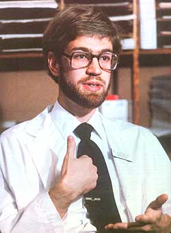
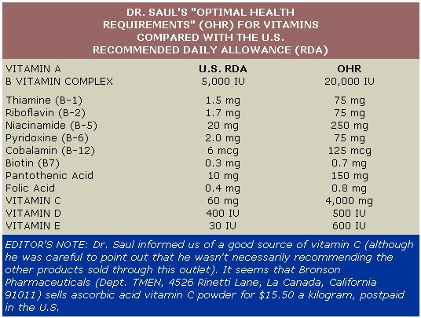

"If we learn more than the doctor in areas of value to our health, it is our duty to apply this knowledge to the betterment of ourselves and our families. We need total health more than medically approved health."
So says 28-year-old Andrew Saul in the opening chapter of his manual Doctor Yourself. Saul is, it seems, engaged in a struggle to expand the frontiers of the medical self-care movement . . . taking the radical view-even in the eyes of some longtime self-help advocates-that a person who lives a truly healthful life should almost never need the services of medical professionals. In the process of spreading his message, Dr. Saul (he's not an AL D., but rather a doctor of naturopathy, a title recognized in several states and widely accepted in Europe) managed to become the first person certified by New York State to teach naturopathic healing and health-maintaining techniques . . . established the Ashwins Health Institute in Hamlin, New York . . . set up a charity vitamin dispensary for the poor in nearby Rochester. . . and published a shopper's guide to healthful supermarket foods, a how-to manual aimed at helping people through their first body-cleansing fast, arid the book Doctor Yourself. Along with all that, he has still found time to teach classes at the State University of New York at Brockport, bombard local newspapers with alternative medical information and generally make every effort to bring his message of natural health care to as many people as he possibly can.
In fact, Andrew Saul first came to MOM's attention while he was teaching a series of courses at last summer's Community of Homesteaders' Good Life Get-Together in Naples, New York. Once the MOTHER staffer who visited the festival saw that Dr. Saul's presentations were progressively better attended as the days went on, he sat in on one himself . . . and quickly became convinced that the outspoken naturopath's ideas merited sharing with our readers.
So MOTHER sent Bruce Woods to visit Dr. Saul at the Ashwins Health Institute for an in-depth discussion. Mind you, by presenting their conversation (in edited form), we are not necessarily endorsing Dr. Sauls ideas, and-more important-we're certainly not trying to convince anyone to avoid traditional medical care. However, we did indeed find Sauls words to be a stimulating challenge to our own ideas of self-health responsibility. And by sharing his thoughts and providing access information on pertinent books and medical studies, we hope to help you, our readers, to be better able to make wise decisions on questions pertaining to your own health and that of your families. After all, there are not many other situations in which finding the right answer can be so vital.
PLOWBOY: Dr. Saul, you've made a name for yourself in the field of alternative medicine at a fairly tender age. That leads me to believe that your interest in medical alternatives goes back a goodly number of years.
SAUL: Well, in essence, I was drawn into natural healing because I found that regular healing didn't work. And I suppose the seeds of that realization were sown when I was a child. Like everybody else, I had the usual injections, and then I went overseas and had more shots, and I ate meals based on the so-called four basic food groups (again like everybody else), and I got sick like everybody else. Not all the time, of course, but often enough.
Now, my "conversion", if you can call it that, was a very slow process . . . I more or less backed into the alternative health field. You see, I was still intending to go into traditional medicine when naturopathic healing was introduced to me by Professor John Mosher at SUNY at Brockport, where I was enrolled in a premed program. Dr. Mosher challenged me on one simple point. He said, "If you really want to help people, why don't you at least investigate the natural healing techniques as well as those of conventional medicine. Let the merits of each system tell you which is best." So I began looking into the subject, and the book that turned me around was Aubrey Westlake's The Pattern of Health. It's a rather unspectacular-looking paperback, but it's probably the most important volume I've read in the last 12 years. Westlake was an experienced English M.D. who had also backed into natural healing, so I could easily relate to what he had experienced. Briefly, he felt that, after 40 years as a physician, he'd spent too much of his time just bailing out leaking boats. He was frustrated by his inability to get down to causes . . . to promote self-help and to effect practical, deep-down cures. The Patternof Health is the story of his discovery of alternative healing techniques. That book inspired me to read more on the subject, and one thing led to another. I soon started using basic naturopathic methods myself-such as fasting, switching to a vegetarian diet, and taking vitamin supplements-and I actually started feeling better.
PLOWBOY: Were there any other experiences that contributed to your disillusionment with standard medicine?
SAUL: Well, when I observed my first surgeries, I found that I wasn't particularly enamored with the idea of cutting out someone's adrenal glands, or otherwise "invading" the person's body, in the hopes of achieving a desired end, one that often wouldn't come about. But the conflict between my medical career and my "sideline" research into alternatives really became intense while I was studying in Boston.
PLOWBOY: Was that at Brigham Hospital?
SAUL: The Peter Bent Brigham Hospital, yes. Now don't get me wrong: That institution's staff members are very good at crisis medicine. But as far as knowing what kind of diet will help a person back to health . . . well, let's just say that I was amazed to see people who had diverticulitis or who'd just had a colostomy getting white bread, soda pop, overcooked vegetables, tiny little salads, slabs of overcooked meat, and no vitamin supplements at all. These were individuals who had been through grueling surgery-sometimes people who were dying-and this lack of nutritional care nailed home the point that orthodox medicine is sometimes wrong. Those who practice it often don't know what they are doing.
However, I also had to begin to ask myself whether I really knew what I hoped to be doing. And that concern led me to a great source of information. I started reading reprints produced by the Lee Foundation for Nutritional Research and found it to be an excellent outlet for good, hard medical and nutritional information. Better still, these reprinted articles are right out of the mainline medical journals . . . including Clinical Physiology,the Journal of Applied Nutrition, the Journal of the American Medical Association, and the rest. The foundation has simply reprinted features that describe instances in which drugs do not work, and others that demonstrate how vitamins and foods can cure real diseases.
And that was what I needed to see . . . reports by doctors who'd worked with medical alternatives. At that point there was no turning back for me, because I was faced with overwhelming evidence . . . data provided by medical doctors, by researchers, by Ph.D.'s, and by leaders in their fields. I'd discovered a tremendous amount of material and I'd begun to see that nature cure was not just a questionable method of treating the common cold, but that it could also be used for cancer, encephalitis, meningitis, pneumonia, polio, diverticulitis, and other terrifying diseases.
PLOWBOY: Yet although you received your doctorate in naturopathy in 1976, you weren't able to actually use it until 1980.
SAUL: Yes, I was able to open the Ashwins Health Institute only after an uphill battle. Professor Mosher, an accountant named Keith Taylor, and I began the process by filing for nonprofit corporate status. To do so, we had to obtain the approval of the state attorney general. And, as you probably know, natural healing is not yet considered legitimate medicine in New York State (but it is accepted in some others . . . including Oregon, Washington, and California).
At any rate, the attorney general approved us without question, and our next step was to approach the New York State Education Department, which actually licenses physicians in New York. We assured that organization that we weren't going to practice medicine or grant M.D. diplomas. So the Education Department approved us in short order, at which point we had to get an OK from the county supreme court. Once that was obtained, the state granted us, after some months, our nonprofit status. Then we asked the Internal Revenue Service to verify and underline what the state had done, and to grant us a tax exemption so that our donors' contributions would not have to be split with the government and could be applied, in total, to the services that we hoped w provide . . . tile charitable vitamin dispensary that we now run, for instance.
This application turned into yet another round of forms and letters. Eventually, however, the IRS granted us tax-exempt status. I do believe that the whole process was worthwhile, though, because when a client or student comes to see me, he or she wants to be assured of dealing with a recognized and reputable professional. I'm always careful to point out that I'm certified by the state of New York to teach what I'm teaching.
"A person really can choose to get well or to stay sick . . . and it's shocking to me that many people choose illness."
PLOWBOY: This would probably be a good time to give a working definition of naturopathy.
SAUL: Well, first of all, naturopathy could also be called nature cure, natural healing, or even natural therapeutics. Nature cure is very different from standard-or allopathic-medicine, because a naturopath does not use drugs and doesn't perform surgery.
Now the first question one might ask upon hearing that is "Well, then, what on earth do you do?"
To answer that, I have to admit that there are a number of naturopathic approaches. Natural healing is a highly diverse field. However, rather than limit myself to any one of these schools of thought, I believe in using sort of a team approach . . . that is, employing many such methods in concert. I'm interested in results rather than "pet" theories. All I want to see is people getting better, and any technique that they can use to get results is fine with me.
Furthermore, nature cure almost always is safer than allopathic medicine. After all, a healthful diet is probably the keystone to ally form of naturopathic therapy. And there are no unpleasant side effects of eating right.
PLOWBOY: It would seem that you're saying the patient bears the responsibility for his or her own health, then.
SAUL: Exactly. A person really can choose to get well or to stay sick . . . and it's shocking to me that many people choose illness. I often tell folks that everybody has the right to be sick. And I'm not being flippant when I say that! If a person really wants to get well, he or she won't mind making a change of lifestyle . . . or taking whatever course of action will help him or her get better.
If an individual wants to get well enough, or perhaps I should say if a person wants to get well, enough. . . he or she will be willing to take such steps. In fact, my most successful students often tend to be just a bit desperate and discouraged . . . and that combination can sometimes yield remarkable results. Many people do their best work when their backs are against the wall.
PLOWBOY: Why is it that nature cure has such a limited acceptance in this country? Isn't it far more generally recognized overseas?
SAUL: Naturopathy is downright mainstream in many other countries. In Germany, for example, naturopathic healers are abundant. Furthermore, there was a time when nature cure practitioners were far more common in the U.S. In Florida, for instance, two sister bills were passed in 1927: the Naturopathic Practice Act and the Medical Practice Act. In those days, naturopaths and medical doctors often worked side by side. But by 1959, the nature cure practitioners were no longer being licensed, while, of course, the M.D.'s are to this day.
The official reason for such "precautionary" restrictions is to protect people from quack therapies. And many individuals have been taken in by treatments that are statistically invalid. Unfortunately, orthodox medicine leads the league in the use of statistically invalid approaches to human illness. One has only to read Ivan Illich's Medical Nemesis to verify that medicine not only is without statistical significance in many cases, but also is sometimes definitely harmful. One out of five people admitted to a typical research hospital today will acquire an iatrogenic-or doctor caused-disease!
PLOWBOY: Can you cite some well-documented clinical evidence of the effectiveness of nature cure?
SAUL: Yes, a great deal of it. You have only to go to the journal of Applied Nutrition, to the Journal of the Franklin Institute, to ClinicalPhysiology, to The Lancet, or to any of the many excellent British and German journals to find that such techniques are well established. For instance, in 1950 Dr. Benjamin P. Sandler, a United States Navy physician, then at the Mayo Clinic, treated tuberculosis-and did so more effectively than anyone else at that clinic at the time-using nothing but a high-protein, low-carbohydrate diet.
Then too, Dr. William J. McCormick of Toronto, Canada has-since 1946, at least-been using high doses of vitamin C (ascorbic acid) to treat herniated or ruptured disks, as well as a variety of infectious childhood illnesses. Or how about Dr. Frederick Robert Klenner of Reidsville, North Carolina? For 45 years he's been using vitamin C as an antibiotic, an antitoxin, and an antihistamine. He's employed it, with success, against polio, meningitis, tetanus, encephalitis, and a number of other serious diseases. This man is giving injections of vitamin C, and reported-in A Physician's Handbook on Orthomolecular Medicine -that vitamin C is the most useful therapeutic substance available to the doctor.
Klenner suggests that when an M.D. admits a patient to the hospital, the first thing he or she should do is to administer vitamin C while deciding what other course of action to take. In many cases, the physician won't have to do anything else . . . because the vitamin therapy will cure the condition. Why, high doses of vitamin C can even be a beautiful treatment for infected cows. I worked on a dairy farm for a while before I started practicing, and helped inject doses of a million or more units of antibiotics to cows with mastitis. Yet if farmers would give their milking stock 20,000 to 30,000 milligrams of vitamin C and eight ounces of cider vinegar a day, the animals wouldn't have mastitis problems.
Colds, cancer, bronchitis, pneumonia, herpes, meningitis, encephalitis . . . how, people ask, can one vitamin cure so many different illnesses? The answer is that the lack of one vitamin can cause many different illnesses.
PLOWBOY: Hold on there. Are you saying that you know of people who've achieved a complete and total remission of genital herpes as a result of vitamin therapy?
SAUL: Yes, that's the proper term for it . . . complete and total remission. The specific form of vitamin C used was calcium ascorbate, in conjunction with sizable doses of L-lysine, a magnesium supplement, and a vegetarian diet. The amount of calcium ascorbate may exceed 40,000 milligrams daily. And yet, proportionate to body weight, that's no more vitamin C than a sick rat would manufacture!
PLOWBOY: Right. Rats, goats, and many other animals produce vitamin C in their bodies, and the amount varies with the creature's health.
SAUL: Yes, a healthy rat may manufacture the equivalent of a human dose of 6 grams a day. A sick rat-or goat-will manufacture a good deal more.
Vitamin C is inexpensive . . . has broad-spectrum utility . . . is effective . . . and is safe. Yet it gets absolutely no significant attention from the medical community. Perhaps that's because physicians don't believe that anything cheap, safe, and generic could work.
PLOWBOY: And, of course, it's also available without a prescription.
SAUL: That's precisely why vitamin C appeals to me, because I'm trying to promote radical wellness self-reliance. By that I don't mean that people should just learn when to go to the doctor or how to avoid mixing their medicines. Such concepts are little more than grade school-level medical self-reliance. I want people not only to know what type of-approach might help them, but also to be able to take the appropriate action and get results, totally on their own. People no longer have to suffer.
PLOWBOY: And it was to spread the word about such health care that you came out with your self-published book, Doctor Yourself. . . which I believe you've called a "health homesteader's handbook".
SAUL: The purpose of Doctor Yourself is to describe-in simple, practical, immediately useful terms-12 ways people can improve their own health.
PLOWBOY: But how do you convince them that they have the capability of managing their own health?
SAUL: The book addresses that fear right off. The first chapter explains that it's easy-and safe-to be your own doctor . . . if you know how. The absence of knowledge is what should be feared.
PLOWBOY: Well, how can a person obtain the necessary knowledge? What sorts of materials are available to the public?
SAUL: Doctor Yourself lists about 140 readily available books and articles, and that's by no means intended to be a complete bibliography. However, the Lee Foundation for Nutritional Research should be the first source a person investigates. [EDITOR'S NOTE: See tire access list accompanying this interview.] I'd even go so far as to suggest that anyone interested in self-care get one copy of every reprint and book the foundation publishes. These would prove to the person, as much as anything can be proved by written material, that "real" doctors do cure diseases with nutrition . . . with fasting . . . with vitamins . . . and with minerals.
Then again, people can simply go to their local libraries, and even to medical libraries-no one's going to throw them out-and research any disease that they'd like to understand. I'd also suggest visiting a pharmacy, borrowing the establishment's copy of the Physician's Desk Reference for Prescription Drugs, and reading enough of it to appreciate how dangerous many drugs are and how little is known about the majority of them. Yet another valuable source of information is the Merck Manual. It's a 2,400-page medical text, and it sells for about $12. That's almost like getting four years of medical education for $12!
PLOWBOY: It sounds like quite a bargain.
SAUL: Yes. This is a book that practically every physician has on his or her desk, and one that every health homesteader should have, too. Now, you might well ask, do I really believe people are going to go through this volume and learn everything they need to know? Certainly not. In fact, I think much of the information in the Merck Manual concerns ways of approaching illness that I'd disagree with. But the book does at least correctly describe symptoms and conventional treatments. It will let a reader know what the medical approach to a specific problem would be.
I also highly recommend Dr. Schuessler's Biochemistry by J.B. Chapman, M.D. The 168-page book lists the 12 Schuessler cell salts and tells exactly how to use them . . . it's doubly cross-referenced . . . and it's probably the most valuable single medical book for the home I've ever seen. [EDITOR'S NOTE: The 12 Schuessler cell salts were categorized, in 1873 by the German biochemist whose name they bear. Many naturopaths believe they can be used to relieve disease by restoring the minerals missing in the affected tissue.]
The next book that belongs in the health homesteader's library is Boericke's Materia Medica, ninth edition, by William Boericke. This 1,000-page volume, a detailed presentation of homeopathic theory and treatment, will set you back about $20.
The possible additions to this list are, of course, about as numerous as the world's diseases. But it's safe to say that you could make a good "tool kit" with six or seven books . . . six or eight herbs . . . a very big bottle of vitamin C . . . some good multiple vitamins (everyone should, I think, take a high-potency natural multiple vitamin a day) . . . and a few other basics.
PLOWBOY: So the tools and the information needed for medical self-care are probably more accessible than most people believe. But aren't there some legal implications of doing one's own doctoring?
SAUL: First of all, it's completely lawful to doctor yourself. The Constitution provides for that. You may also treat your immediate family if you-and they-wish. Should you start prescribing for a friend or a neighbor, though, you'd be venturing into legal corridors. And, if you charge for treating a neighbor or friend, you are definitely asking for trouble.
Then again, though, I don't treat anybody. And I don't diagnose,0 prescribe, or operate. Instead, I teach people how to diagnose and how to treat themselves to get specific results. They may use that education or not . . . it's up to them.
PLOWBOY: I've read that you're opposed to vaccination.
SAUL: Slow down a second. I do counsel people frequently on the pros and cons of vaccination. But I never tell anyone not to get shots or to get shots. I simply point out the alternatives that are available. Our four-year-old daughter has never had an injection, and our son is no longer getting them, vet both youngsters-lifelong vegetarians-are at least as healthy as the other children in the neighborhood.
PLOWBOY: Even though they're exposed to the many contagious illnesses children encounter in school?
SAUL: Yes. And if you're initially put of by this idea, remember that the unvaccinated child poses absolutely no threat at all to the other children, because the others have had their shots. So the only possible complaint can be one of neglect, with the argument that says, "If you don't allow vaccinations, you're injuring that child." But that just isn't necessarily a true statement. The fact of the matter is that many injections-including the diphtheria, pertussis, and tetanus shots-are not without risks of their own. What's more, many vaccines may not be all they're cracked up to be. For instance, there was a medical doctor up in Canada who treated polio with iodine supplements in the 1950's. The method is called iodine prophylaxis, and the effectiveness of his treatments suggests that the popularization of iodized salt has had more to do with the elimination of polio in America than the polio vaccine!
Now I am not saying that there's no statistical significance to results with the Salk vaccine. But I also believe that, on a scale of 1 to 10, it definitely ranks below 2. Whereas I think vitamin C, a vegetarian diet, and iodine will actually prevent polio more effectively. Once again, all of the evidence supporting this theory can be found in articles available from the Lee Foundation.
PLOWBOY: Let's say an individual who's reading this interview decides, "Well, this Dr. Saul seems to make some sense, and I know I haven't been taking care of myself as well as I could." 'then . . .
SAUL: What should he or she do?
PLOWBOY: Yes. And-to be more explicit-if someone isn't ready to jump into a major lifestyle change with both feet, what initial steps might give him or her enough immediate results to provide encouragement?
SAUL: Well, the very first thing I recommend is that people stop eating meat.
PLOWBOY: Whoops!
SAUL: I know, I lose a lot of people on this point. But I'm not out to make friends . . . I'm out to tell people what I believe is the truth.
Unfortunately, a lot of my students kind of run into a brick wall right there. They are just not willing to give up the hot dogs and hamburgers in order to get rid of-say-their arthritis. Well, if they're not ready to drop meat, they should no longer look at themselves as victims of this demon arthritis, but rather as victims of their own stubbornness. This is why motivation is so important. Natural healing works . . . but only if you do.
You know, I was in a class once, and I mentioned that rats make their own vitamin C, and someone asked, "Does that mean rats are a good source of vitamin C?" I replied, "Sure, if you eat your rats raw. Once you cook the meat, the vitamin C content is almost nil."
I think that's why traditional Eskimos tend to be healthy . . . because they eat raw meat. If they tried to subsist on cooked meat, they'd all be seriously vitamin-deficient. People who do eat meat, then, probably should do so the way that true carnivorous or omnivorous creatures do: Eat the whole animal . . . skin, bones, blood, intestines, brains, eyes . . . everything.
" . . . the popularization of iodized salt [may have] had more to do with the elimination of polio in America than the polio vaccine!"
PLOWBOY: Would that actually provide a balanced . . .
SAUL: It'd be a perfect diet. If you completely consume a raw, freshly killed animal, you'll get everything you need . . . all the vitamins, all the minerals, everything. But that's repugnant to us, because, you see, we're not meat eaters by nature.
However, to return to my subject, people who do stop eating meat typically find that-for instance-their hay fever isn't as bad, their allergies aren't as severe, or their skin doesn't break out as much. This is due, in part, to the fact that these "new" vegetarians are avoiding all of the chemicals that find their way into meat: the hormones, the antibiotic residues, the colorings, and the preservatives.
On top of all that, when people stop eating meat, they spend less on food. I save $20 a week simply as a result of being a vegetarian. Now that's $80 a month tax free . . . without having to go out and earn it. I'm all for that!
PLOWBOY: There are, of course, any number of arguments as to whether humans are, by nature, omnivorous or vegetarian . . . and there are also any number of people who'll give you very convincing evidence pointing one way or the other. However, I suspect that the key here is the quality of the meat that people can get nowadays.
SAUL: Look, I'm not telling people that they have to stop eating meat. I'm saying that if I were they, I'd stop eating meat right away. If they do so, regardless of the validity of one or another of the arguments about mankind's nature, I believe they'll get results. They'll feel better, they'll have fewer illnesses. That's my real reason for not eating meat, because a vegetarian diet works.
That should hardly come as a surprise. After all, when you buy a cut of beef; for example, you're getting the dead muscle tissue of an animal that's been raised in a highly confined environment and on a very limited diet.
PLOWBOY: That environment was probably quite stressful, too.
SAUL: The meat could contain lead if the animal was grazed near an interstate highway, or be doped with antibiotics or other chemical residues. And, on humanitarian grounds, some farming conditions are deplorable . . . those typical of many veal-raising operations, for instance.
PLOWBOY: We recently did an interview with Dr. Michael Fox of the Humane Society of the U.S., and he touched on that. [EDITOR'S NOTE: See MOTHER NO.79.] In fact, he cited evidence that human diseases are developing resistance to antibiotics as a result of the huge quantities of these substances that are given to animals.
SAUL: Worse yet, we're actually starting to see humans contracting diseases as a consequence of eating animals that have been fed "killfloor scraps", or-as they're commonly called-"meat by-products". Think of it this way: A steer goes to market, and the muscle meats by no means make up the whole animal . . . there's also a lot of waste that is processed into meat by-products. And these substances sometimes include the entire bodies of animals that are cancerous or have other diseases that make them unfit for human food. Well, according to a report by Dr. P.F. McGargle-a veterinary surgeon who did meat inspection-published in Preventive Medicine Forum, countries in which these ground-up animal byproducts are used in livestock food have an unusually high incidence of human cancer. Childhood cancer, in particular, is much higher in countries that use kill-floor scraps when producing feed for hogs, chickens, and turkeys.
Now if you organically raise your own livestock, or if you're a hunter and you get wild game . . . surely that animal had a better chance to get a balanced diet rich in minerals and vitamins-and lived a better life-than did a steer confined to an intensive feedlot. Even so, I still think we should eat the whole animal- raw -if we're going to call ourselves omnivorous.
PLOWBOY: What actions other than adopting a vegetarian diet would you recommend?
SAUL: If a person is not on insulin or any medication that requires eating, I'd suggest a short fast (four to six days) to rid the body of the toxins accumulated over years of unhealthful living. Fasting, by the way, is also a commonly used naturopathic treatment for certain illnesses.
PLOWBOY: Do you have any tips that might help a first-timer get through a fast? A lot of people are really intimidated by that idea.
SAUL: We have a little brochure called "Techniques for Successful Fasting" that many individuals have found helpful. Basically, it makes the following recommendations: [1] Go into the fast with a positive attitude. Some folks think they're surely going to die if they stop eating. Of course, that's not true, unless they have a health problem such as diabetes and can't fast. [2] They should attempt a 50/50 juice/water fast . . . consuming half fruit juice and half water, either mixed together or in alternation.
PLOWBOY: In any amounts that they feel comfortable with?
SAUL: Yes . . . any amounts. [3] They should continue their vitamin supplements while fasting. Now some naturopaths say you don't need these "boosters" while fasting-or, indeed, at all, if you're eating a healthful diet-but my feeling is that in real life, with its stresses of jobs and kids and traffic jams, you'll find it worthwhile to take vitamins every day.
[4] The next tip is to have a nightly enema during the fast-on any day that you don't have a bowel movement naturally-to rinse out the wastes that accumulate in the bowel and are not being eliminated. Otherwise, toxins will remain in your body when your fast is over. Now I lose a lot of individuals when I recommend that nightly enema, but, again, I'm not out to win buddies.
[5] And the last piece of advice is to come of the fast slowly and gradually. If you fast for four days, take a day or two to come of it. If you fast for six days, take at least two days.
PLOWBOY: Just how does one come of a fast gradually?
SAUL: Stick to fruit salads, vegetable broths, and such . . . and eat half of what you want but do so twice as often as you normally would. If you try all these steps, you'll almost certainly succeed. Most people who have fasted and hated it were on a water fast with no vitamins and no enema.
PLOWBOY: If people do manage to give up eating meat and make their way through the first fast, what should they then consume on a day-to-day basis? What do you feel would be healthful?
SAUL: A two-thirds raw food diet. Or what I prefer to call a two-thirds salad diet. I recommend, for example, an all-fruit breakfast, with some cheese or yogurt, and an all-salad lunch. Try to use sprouts instead of lettuce . . . sprouts are a complete protein while lettuce is not. Then, for supper, eat any meatless menu that you like . . . going very light on sweeteners and very light on eggs. I also recommend drinking three glasses of raw fruit or vegetable juice a day . . . preferably before meals.
PLOWBOY: What about breads?
SAUL: Whole grain breads can be a very valuable part of any diet. There are other ways to get your grains, though. Sprouting your wheat, for instance, is a superb way of getting complete protein.
And this brings us to an opportunity to exercise some real dietary economy. If people want to save money and still feel that they're getting enough protein, they should be sure to have a cereal bowl full of sprouted grain or beans a day. You can grow a whole jarful of sprouts for pennies. In fact, you could live on an all-sprout diet for less than $3.50 a week!
"If you completely consume a raw, freshly killed animal, you'll get everything you need . . . all the vitamins, all the minerals, everything."
There are people right now who are starving to death in America-many of them are elderly-because they can't live on the $10$12 a week that they can spend on food. If these people were to eat, say, a diet consisting of half sprouted wheat and half sprouted alfalfa, lentils, mung beans, sunflower seeds, or chick-peas, they would get all of the protein they need . . . all of the vitamins . . . and all of the minerals. Then, if a person had just a little additional money, he or she could supplement that all-sprout diet with a daily eggnog . . . the latter being simply a glass of raw milk and a raw egg yolk only, with maybe a little sweetener added. That would provide an excellent poverty-level diet. Now I am not suggesting that we should all eat that way. I'm saying if I had only $4.00 a week, I could be very healthy on that amount of money.
PLOWBOY: And very bored, perhaps.
SAUL: Very bored, but also very alive. You know, it doesn't cost much to get good nutrition, but we neglect our need for it. I wonder how many nursing homes even give a high-potency natural multiple vitamin every day?
And simple, easily available vitamins can actually fight drug addiction! I've written to Nancy Reagan and expressed my support for her fight against drug abuse in children. And I told her that our work at the Ashwins Health Institute-in particular our vitamin dispensary that serves the poor in Rochester-has shown us that substance abuse trails off when individuals get adequate vitamin supplements . . . especially B vitamins and vitamin C in substantial quantities. I suggested to Mrs. Reagan that she help develop a national vitamin supplementation program. Unfortunately, all I got in reply was a polite letter from her press secretary.
Yet I've talked to people at St. Joseph's House of Hospitality in Rochester who often seemed to be so drunk they couldn't stand up without my holding them. We get such alcoholics on vitamin C and B complex, though, and those individuals can get off the booze. And that means a lot.
More amazing still, in Scotland it's been discovered that people who-in the course of treatment for cancer-were given morphine, or even heroin, can be injected intravenously with ten grams of vitamin C a day, and break the addiction in less than ten days . . . with no withdrawal symptoms, maintenance drugs, or side effects!
PLOWBOY: Hasn't it been said that almost 90070 of all North Americans don't get enough vitamin C?
SAUL: Yes. William J. McCormick, the Toronto, Canada M.D. I mentioned before, did tests on several thousand individuals. He did find that 9007o of them were vitamin C-deficient.
That may sound like a shocking statistic, but look at our nearest animal cousin, the gorilla. It's a vegetarian animal . . . one that's anatomically very similar to human beings and one which gets over six thousand milligrams of vitamin C a day in its normal diet. Yet the government's telling us that we need (according to the RDA) about one one-hundredth of that amount. Now somebody's wrong, and I'll side with the gorilla and against the government.
Of course, that common human deficiency's very likely why we find that people simply get better when they take vitamin C. Statistics and controlled experiments aside, it all comes down to what the individual is willing to do. If any reader of this interview wants to conduct a safe experiment, all the person has to do is start taking the amount of vitamin C that I recommend and see if he or she feels better after a few weeks. [EDITOR'S NOTE: See the accompanying chart.] The proof is in the pudding. You can't argue with that, any more than you should ignore Ivan Illich's disclosure that survival rates for the most common types of cancer-those that make up 90010 of all cases-have remained virtually unchanged for the past 25 years.
PLOWBOY: Are you saying that all of our new chemotherapeutic drugs have made no progress in treating these cancers?
SAUL: Very little. Let me point out-as Linus Pauling has noted that the medical establishment has double standards when it comes to vitamins and medicines. A drug may not work all the time, and may even have dangerous side effects, but still be considered a worthwhile risk for a possible success. Whereas if a vitamin doesn't work all the time, but is totally safe, most physicians won't even try it.
PLOWBOY: Are there any other easy self-help courses of action that you'd recommend?
SAUL: Well, for one, there's the "spontaneous release by positioning" technique (as developed by Lawrence Hugh Jones, D.O.), which is a method-a first aid technique-for adjusting a person's spine. [EDITOR'S NOTE: We'll describe this method in detail in our next issue.]
PLOWBOY: You seem to be sowing a number of self-help seeds, Dr. Saul. What do you hope will result from such work?
SAUL: Most of all, I'd like to see people stop living with their illnesses and start living without them. I dream of a nationwide system of neighborhood health cooperatives, which will make individuals so self-reliant that they can simply bypass the professionals. And I mean bypass the naturopath as well as the medical doctor. Now if someone has a broken leg or is bitten by a rabid dog, for heaven's sake, they'd still have to seek medical help. The secret is not to never go to a doctor . . . the secret is to rarely need to go.
PLOWBOY: So you believe that every illness is a result of unhealthful living.
SAUL: Basically, yes.
PLOWBOY: How does naturopathic theory explain the existence of contagious diseases?
SAUL: I could probably fill your magazine responding to that question, but I'll try to be brief. First of all, there is no absolute proof that germs are the primary cause of any illness. Yes, germs are found at the scene of illness. But then, detectives are found at the scene of a crime, and that fact doesn't mean that they committed it. <
strong>PLOWBOY: OK.
SAUL: In fact, many medical doctors have, during the last 150 years, gone on record as saying that they believe the germ theory isn't valid. It certainly doesn't seem to explain cancer very well . . . or heart disease . . . or mental illness . . . or diabetes. At least 20 billion dollars' worth of cancer research hasn't been able to defeat malignancy, or we'd all be vaccinated for it, you can be sure of that.
That's the first basic point. The second is that if we go back to Robert Koch , who formulated Koch's postulates-upon which the germ theory is based-we find that there's a logical flaw in that argument. The first postulate says that you can isolate the germ in a sick animal. The second postulate says you can culture that germ and then-here's the third postulate-inject that cultured germ into a healthy animal and produce the symptoms characteristic of the illness. The fourth postulate states you can then remove the germ from the newly sick animal . . . and it will be the same germ, thus proving that the microorganisms caused the disease.
Now that sounds ironclad. But-as Andrew Weil, M.D. points out in his book The NaturalMind -there's a flaw in postulate three. How is the germ presented to the animal? By bypassing all of the body's defense systems, since it's injected directly into the bloodstream!
The naturopath claims that disease resistance is the main story! It allows germs to become a factor.
PLOWBOY: Are you saying, then, that someone who leads a healthful life would be less likely to contract a contagious disease?
SAUL: Absolutely. They'd be less likely to catch it, and if they did, it would be less severe. Here's a simple example. Our children had been playing with the neighbor's kids just before those children's chicken pox became visible, at the most contagious stage of that disease. A few days later, the other kids had chicken pox. But our youngsters developed only five or six spots apiece. We upped their vitamin C and that was the end of that.
PLOWBOY: That sounds analogous to the increased disease and bug-attack resistance shown by healthy, organically grown plants.
SAUL: Certainly. And you can apply that same line of comparison when considering the laboratory animals used in medical research. Think about the white rats-generation after generation after generation of them-that are fed only commercial rat food. That diet can't possibly contain every natural factor . . . it can only contain what we humans think rats need for a healthy life. OK?
So all of these rats get the same diet . . . one that quite possibly is deficient, and certainly is given in excess. We introduce germs to these animals and they drop dead. When I was in Australia, I studied with Professor S.A. Barnett of the Australian National University in Canberra. He asserted that if those same experiments were conducted with London sewer rats, the results would be quite different, because those rodents wouldn't be so quick to die. Not only do London sewer rats have a more broadly based diet . . . they're also, of course, constantly exposed to germs. There simply wouldn't be any rodents if the population wasn't able to resist illness. Again, resistance is the question . . . not germs.
And people can build resistance by getting plenty of rest . . . plenty of exercise . . . and the right kind of diet. We also need vitamin supplements, especially vitamin C. If folks follow these simple rules, though, germs will really become more or less irrelevant. This sort of natural disease prevention is always to be preferred to medical inoculation and such. If it's a toss-up, go with nature. Nature has had thousands of years to work out the enzyme/vitamin/elimination/nutrition structures of the body. Nature has had a lot of experience.
The medical establishment, for all its good intentions, has had considerably less experience.
You know, when the signers of the Declaration of Independence were sitting down at the table, one of the gentlemen present was Dr. Benjamin Rush, surgeon general of the Continental army. When they sat down to sign the Declaration-to more or less create this country-Dr. Rush said the following: "The Constitution of this republic should make special provision for medical freedom, as well as religious freedom. To restrict the art of healing to one class of men, and to deny equal privileges to others, will constitute the bastille of medical science. All such laws are un-American and despotic."
And this, of course, is the real crux. Medicine is not a science . . . it's an art. And that's why people should be encouraged to be their own doctors . . . because it's an art form, for which you need no degree, and which generally requires no training that you can't pick up on your own.
Just remember this basic point: Our internal environment is the primary influence on our health! We're talking about inner-space ecology. We're talking about interior homesteading. And the rewards of naturopathic living can be enormous. To sit down to a simple, healthful meal with healthy children and to be able to know that your basic bodily equipment is functioning as well as possible, should, I think, be a more important aspect of self-reliance than solar heating!
PLOWBOY: One of the first rules of a self-reliant lifestyle is that you must take care of your tools . . . and you're talking about the most precious tool we have.
SAUL: Exactly. This body is the only one we're going to get, so we owe it to ourselves to be careful with it. And I think that we can get better health care by doing the job ourselves than we can by contracting it out.
Of course, if you are going to doctor yourself; it's vitally important that you take the time, do the reading, and put enough energy into it to do a good job. I don't want people going out half-baked . . . reading one book and thinking they're experts.
But make no mistake, naturopathic remedies do work. If a dedicated person goes into the field to prove nature cure wrong, he or she will wind up proving it right. The truth will stand on its own. The folks with real problems are those who can't be bothered to look into natural healing at all. The people who are indiferent. The people who don't care.
Our hospitals and nursing homes are filled to capacity with those people!
EDITOR'S NOTE: People interested in obtaining more information about Dr. Saul and the Ashwins Health Institute cat: [1] mail a self-addressed, stamped envelope-along with a dollar or two to cover expenses-to the Ashwins Health Institute, Dept. TMEN, 23 Greenridge Crescent, P.O. Box 144, Hamlin, New York 14464 for general information . . . [2] send a tax-deductible donation of $10 or more to receive a copy of Doctor Yourself by return mail . . . or [3] send a donation of $20 or more to receive Doctor Yourself, Techniques for Successful Fasting", and a packet of related home health-care information.
|
 |
 |
|